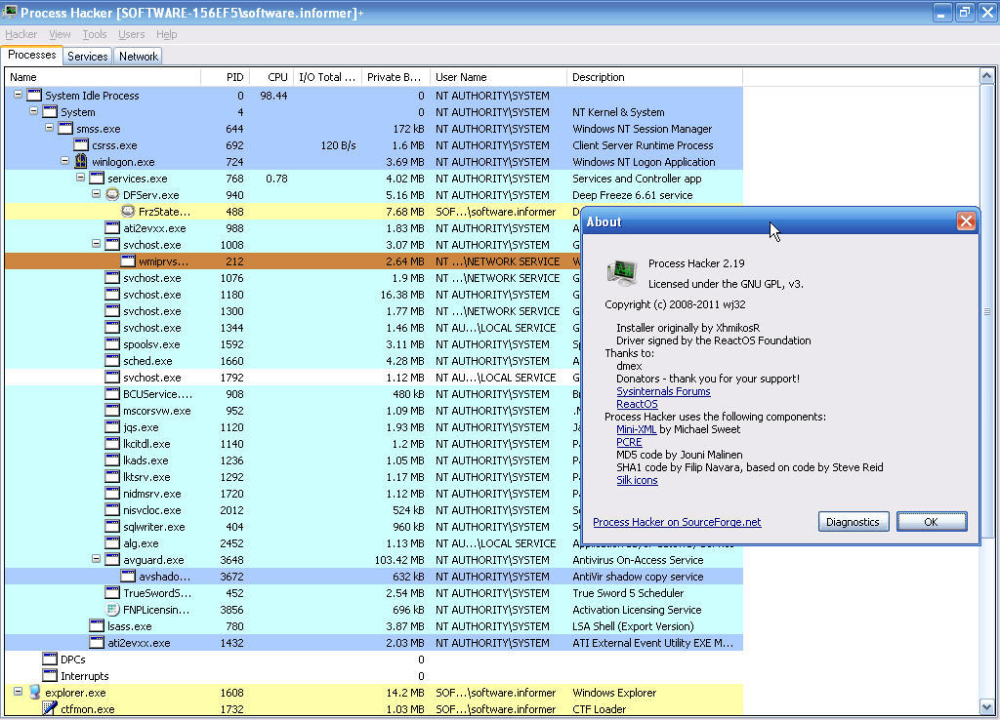

Бесплатный монитор процессов, служб, сети и дисков. Находит скрытые процессы, завершает «неубиваемые» и показывает о системе всё, что Windows прячет от вас.

От графиков нагрузки в реальном времени до поиска процессов, спрятанных руткитами.
Живые графики CPU, памяти, сети и диска. Обновляются каждые доли секунды — ни один скачок нагрузки не ускользнёт.
Потоки, дескрипторы, память, токены, переменные окружения и все загруженные DLL — по каждому процессу.
Собственный драйвер режима ядра находит процессы, замаскированные руткитами и вредоносным ПО.
Закрывает процессы и зависшие службы, с которыми не справляется обычный диспетчер задач.
Встроенные мониторы показывают, какой процесс ест трафик и что именно читает/пишет на диск прямо сейчас.
Полное управление службами: запуск, остановка, зависимости, DLL, аккаунты — без ковыряния в реестре.
Process Hacker 2.39 для Windows в ZIP-архиве. Без установки: скачайте, распакуйте в любую папку и запускайте ProcessHacker.exe. Для всех возможностей запускайте от администратора.
Process Hacker — бесплатный монитор процессов с открытым исходным кодом. Он показывает процессы, службы, сетевые соединения, дисковую активность и всё остальное, что происходит в системе, — в реальном времени и в куда большей детализации, чем штатный диспетчер задач.
Диспетчер задач показывает верхушку айсберга. Process Hacker раскрывает потоки, дескрипторы, память, токены и загруженные DLL каждого процесса, умеет завершать процессы, «неубиваемые» штатными средствами, находит скрытые руткитами процессы и строит живые графики по каждому ресурсу.
Да. Программа не следит за пользователем и не отправляет данные — весь код открыт. Права администратора нужны, чтобы загрузить драйвер режима ядра: именно он даёт доступ к скрытым процессам и низкоуровневой информации. Без администратора Process Hacker тоже работает, но в урезанном режиме.
Некоторые антивирусы настораживаются на инструменты с драйвером режима ядра — так же они реагируют и на другие системные утилиты. Это ложное срабатывание: исходный код открыт, его может проверить любой. При желании добавьте Process Hacker в исключения своего антивируса.
Windows 7 SP1 или новее (включая Windows 10 и 11), около 15 МБ на диске. Работает на x86 и x64. Портативная версия не требует установки — просто распакуйте архив и запустите ProcessHacker.exe.